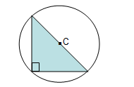

Circumcircle of a triangle
A circle which passes through all three
vertices
of a triangle
Also "Circumscribed circle".
Try this Drag the orange dots on each
vertex
to reshape the triangle. Note that the circumcircle always passes through all three points.
The circumcircle always passes through all three vertices
of a triangle. Its center is at the point where all the
perpendicular bisectors
of the triangle's sides meet. This center is called the circumcenter. See
circumcenter of a triangle for more about this.
Note that the center of the circle can be inside or outside of the triangle.
Adjust the triangle above and try to obtain these cases.
The radius of the circumcircle is also called the triangle's circumradius.
For right triangles

In the case of a
right triangle,
the
hypotenuse
is a
diameter
of the circumcircle, and its center is exactly at the
midpoint of the hypotenuse.
This is the same situation as Thales Theorem,
where the diameter
subtends
a right angle to any point on a circle's circumference.
If you drag the triangle in the figure above you can create this same situation.
For equilateral triangles
In the case of an equilateral triangle,
where all three sides (a,b,c) are have the same length, the radius of the circumcircle is given by the formula:
where s is the length of a side of the triangle.
If you know all three sides
If you know the length (a,b,c) of the three sides of a triangle, the radius of its circumcircle is given by the formula:
If you know one side and its opposite angle
The diameter of the circumcircle is given by the formula:
where a is the length of one side, and A is the angle opposite that side.
This gives the diameter, so the radus is half of that
This is derived from the
Law of Sines.
Construction of a triangle's circumcircle
It is possible to construct the circumcenter and circumcircle of a triangle with just a compass and straightedge.
Construction of the Circumcircle of a Triangle has an animated demonstration of the technique, and a worksheet to try it yourself.
Other triangle topics
General
Perimeter / Area
Triangle types
Triangle centers
Congruence and Similarity
Solving triangles
Triangle quizzes and exercises
(C) 2011 Copyright Math Open Reference.
All rights reserved